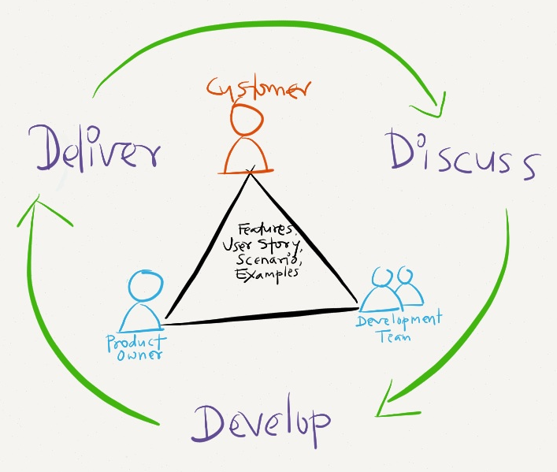
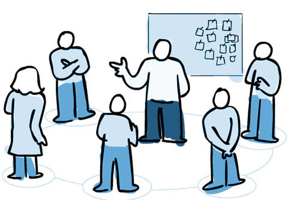

Ritos do Scrum
Review Meeting
A Review Meeting é uma reunião que deve ser realizada no final de cada sprint, onde mostra-se para o cliente (e também para o usuário, se possível) tudo o que ficou pronto na sprint. Todos os membros do time devem participar. A duração é de, no máximo, 4h para uma sprint de 1 mês.
Porém, o que é pronto? A definição de pronto varia de projeto para projeto, de time para time e de momento em momento de projeto. Neste curso vamos estabelecer, sempre que possível a seguinte definição de pronto: teste de aceitação + desenvolvimento + review de código + aprovação.

Ela funciona de uma forma bem simples, o cliente ou usuário experimenta as funcionalidades desenvolvidas e dá o feedback. O cliente pode encontrar bugs, pensar em melhorias e até novas funcionalidades.
O Product Owner deve tomar notas desses itens acima e adicionar ao Product Backlog na prioridade adequada.
No final da reunião, o time define se a sprint foi bem-sucedida ou mal-sucedida, de acordo com a meta estabelecida na Planning Meeting.
Retrospective Meeting
A Retrospective Meeting é uma reunião para por em prática o conceito de melhoria contínua. Nessa reunião, o time se foca em descobrir como melhorar ainda mais o time. A duração é de, no máximo, 4h para uma sprint de 1 mês.
Há diversos métodos de retrospectivas, neste curso iremos usar a retrospectiva jornada do herói:
1 - Explicar o intuito da atividade:
"Nós estamos aqui reunidos para, coletivamente, escrever nossa jornada do herói."
2 - Descrever as principais áreas da jornada:
- o herói: a pessoa ou o grupo que passará pela jornada;
- o guia: a pessoa ou as coisas que guiam o herói;
- a caverna: os desafios a serem enfrentados;
- o tesouro: as recompensas e conquistas.

3 - Pedir aos participantes para escrever em post-its notas para cada área:

4 - Conversa e análise:
"Esta atividade foi realizada para melhorarmos cada vez mais como time. Ela foi muito útil para identificar as pessoas envolvidas, os principais desafios, objetivos desejados e o que é necessário para nos guiar".
Fonte: Fun Retrospectives - Hero's Journey
No final dessa reunião, deve ser ter uma lista de ações para se fazer na próxima sprint. Uma ação é algo que deve ser feito e que envolve todo o time, como, por exemplo: o Scrum Master explicar perdas e ganhos da maior participação do cliente.
Daily Scrum

Para enfrenter obstáculos e ter uma maior visibilidade do andamento de tarefas e história na sprint, todo dia no mesmo horário e local o time se reúne para responder três perguntas:
- O que eu fiz desde o último daily scrum?
- O que eu pretendo fazer até o próximo?
- Quais problemas me atrapalharam?
A duração dessa reunião não deve passar de 15 minutos. Para isso, apenas devemos apontar problemas, não resolvê-los nela. Caso alguém souber como ajudar, apenas indica que sabe e após a daily os interessados se reunem.
Planning Meeting
A Planning Meeting é uma reunião que deve ser realizada no início de cada sprint, onde é planejado o que cabe na sprint e é definido uma meta para o time. Todos os membros do time devem participar. A duração é de, no máximo, 4h para uma sprint de 1 mês.
Antes da Planning, o Product Owner já deve ter olhado as histórias mais prioritárias do projeto, confirmando o entendimento com o cliente, melhorando a clareza e quebrando funcionalidades grandes em partes menores que ainda continuem entregando valor ao cliente. Esse processo é conhecido como refinamento do topo do Product Backlog.
A reunião começa com o Product Owner explicando o item de maior prioridade - tendo em vista que a história de usuário é voltada para negócio, isto é, maior prioridade na perspectiva do cliente/usuário. Após isso, os desenvolvedores tiram dúvidas de entendimento, quebram a funcionalidade em tarefas e discutem em alto nível as dificuldades de implementação, apenas para se atribuir uma estimativa de esforço.
Esse processo se repete para as próximas histórias até o máximo que o time consegue fazer em uma sprint.
Então, os desenvolvedores e o Product Owner negociam quais itens serão feitos na próxima sprint e formam o Sprint Backlog: a lista priorizada das histórias e tarefas que o time planeja fazer nessa sprint.
Uma vez que o Sprint Backlog está definido, o time cria uma meta que exprime o valor que será entregue para o cliente/usuário.